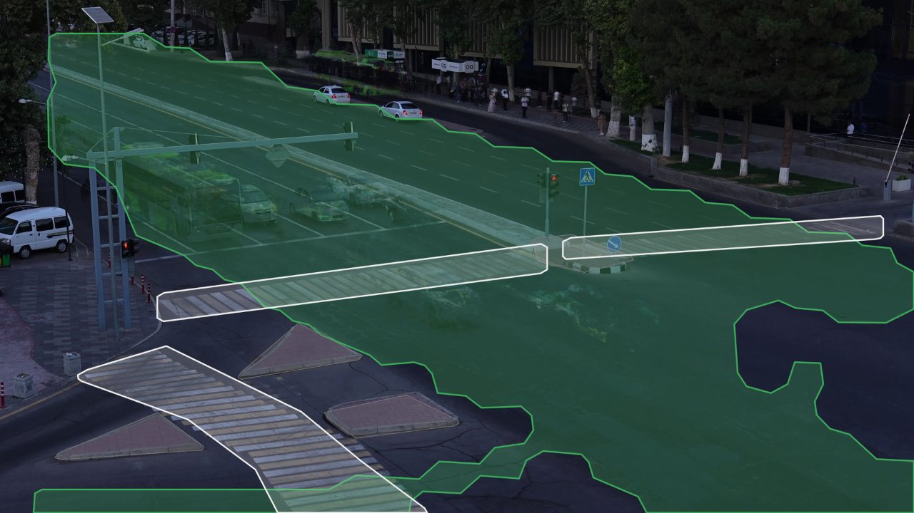
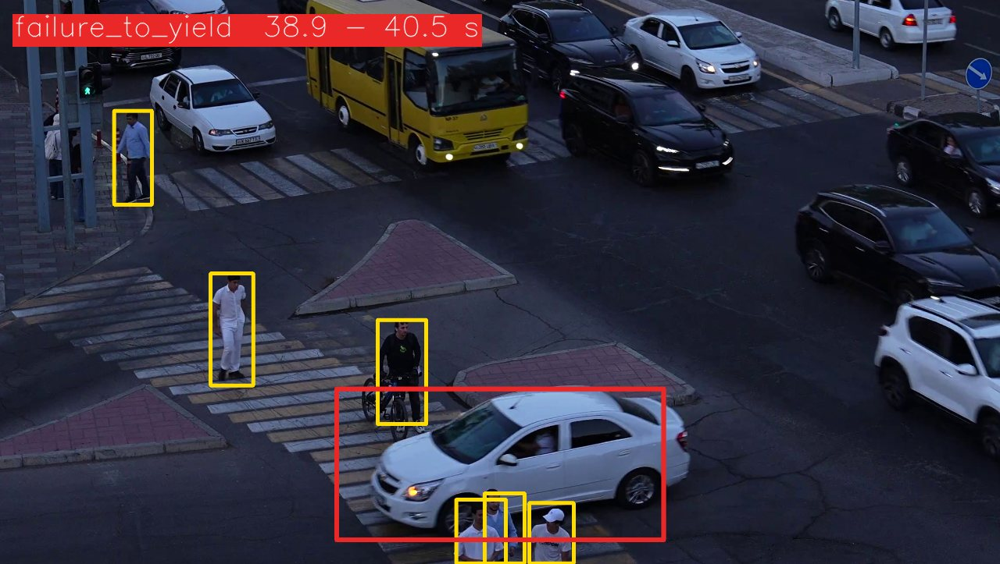
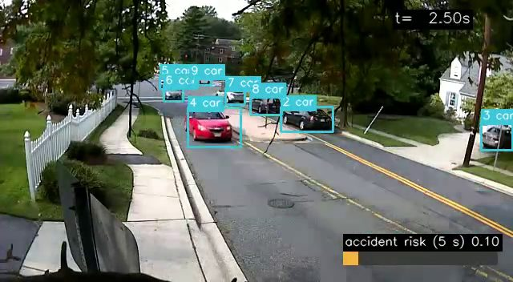
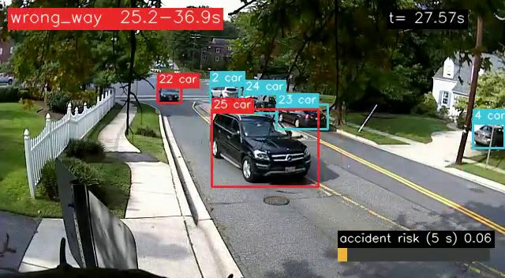
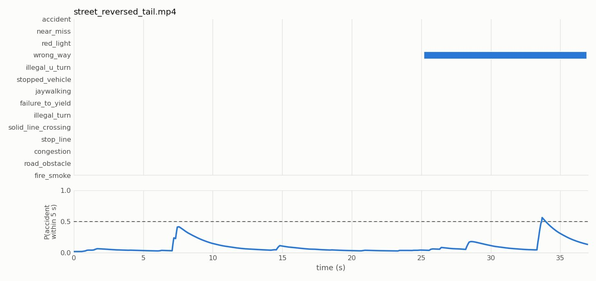
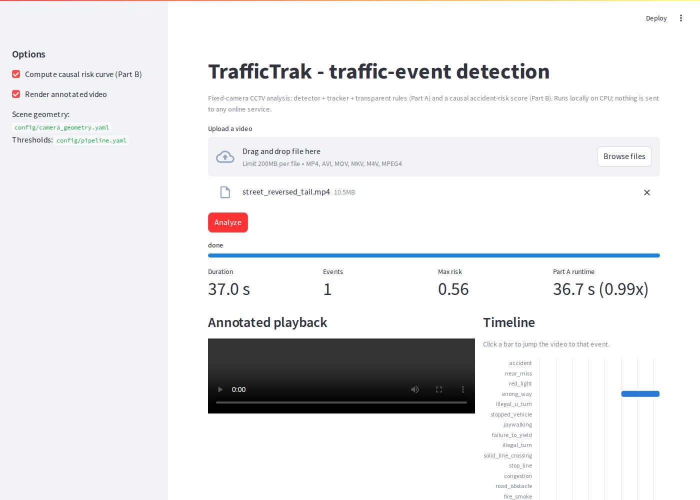
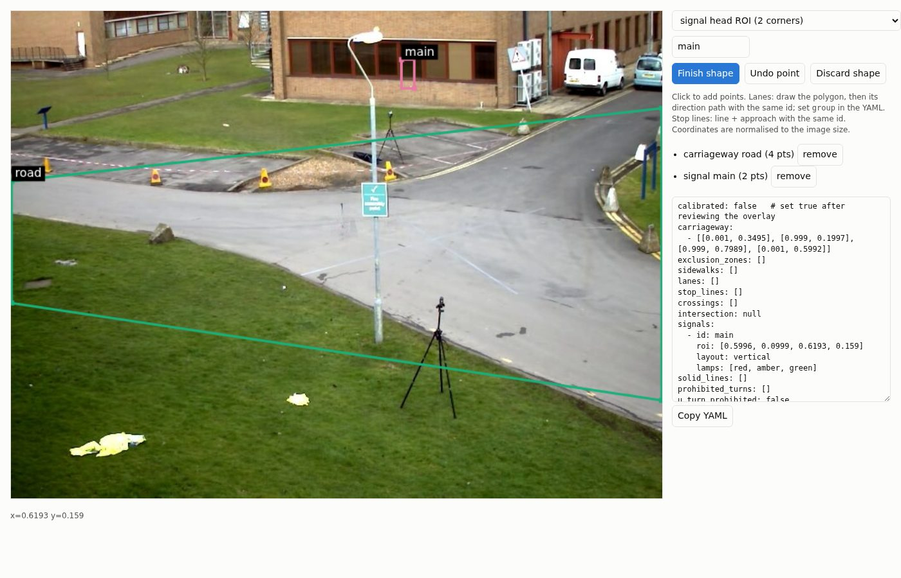

WIUT Hackathon 2026 · Computer Vision track
Reading a road camera the way a traffic officer would.
TrafficTrak watches video from one fixed CCTV camera and reports every traffic event (crashes, near misses, red-light runners, wrong-way drivers, jaywalkers and more) as precise time segments. It also estimates, frame by frame, the chance that an accident is about to happen. It runs fully offline on one GPU, using only open models.
How it works
One learned component does the seeing. Everything that decides what counts as an event is written as an explicit, auditable rule, so every alert can be explained.
Decode
Every 2nd frame on a GPU, read in a background thread. Timestamps are frame index ÷ fps.
Detect
YOLOX-M (open, Apache-2.0) finds cars, buses, trucks, bikes, people and animals.
Track
A ByteTrack-style tracker keeps each road user's identity through occlusions.
Understand the scene
Lanes, stop lines and crossings from a calibration file, plus the normal traffic flow learned from the video itself.
Apply rules
One state machine per event type turns trajectories into start and end times.
Clean up
Merge fragments, drop blips, never overlap two events of the same type.
Speeds measured in car lengths, not pixels
A car far away moves only a few pixels per second; a close one moves hundreds. We measure every speed in units of the object's own size, so one threshold means the same thing near and far from the camera, with no camera calibration needed.
The camera never moves, so the scene can be learned
Where traffic normally drives, and in which direction, is learned from the vehicles themselves. A driver going against that learned flow is flagged as wrong-way. Parked cars at the kerb, where traffic never drives, are not mistaken for stopped vehicles.
Fourteen event types, one rule each
The official metric punishes guessing: one false alert of a type that never occurs costs as much as missing a whole class. So each rule only fires when its evidence is present, and rules that need road markings stay silent until those markings are calibrated.
| Event | How it is detected | Status |
|---|---|---|
| accident | Visible contact between road users, plus sudden braking and a jolt, then both stop | Active |
| near_miss | Time-to-collision under 1 s with hard braking or swerving, and no contact | Active |
| wrong_way | Sustained heading opposite to the lane or learned traffic direction | Active |
| stopped_vehicle | Still for ≥ 10 s on the road while other traffic passes it (not a signal queue) | Active |
| congestion | A whole direction of traffic crawling or standing for ≥ 30 s | Active |
| road_obstacle | Animals on the carriageway (background-change debris detector available, off by default at this busy scene) | Active |
| red_light | Vehicle front crosses the stop line while the traffic light has been red | Off: signal phases unknown |
| stop_line | Vehicle stops past the stop line on red, until the light turns green | Off: signal phases unknown |
| jaywalking | Pedestrian on the carriageway outside a crossing; standing riders whose scooter was not detected are excluded | Active · calibrated |
| failure_to_yield | Moving vehicle drives through a crossing with a walking pedestrian on the zebra right in front of it | Active · calibrated |
| solid_line_crossing | Wheel positions change sides of a solid marking | Needs calibration |
| illegal_turn | Trajectory from a prohibited "from" zone into its "to" zone | Needs calibration |
| illegal_u_turn | Heading reverses ≥ 150° where U-turns are prohibited | Needs calibration |
| fire_smoke | Optional image classifier; off unless its weights are supplied | Optional |
Seeing an accident before it happens
For every frame, TrafficTrak estimates the probability that an accident starts within the next five seconds. It uses only the frames it has already seen, the way a live system would.
Conflict
Two road users on a collision course: predicted closest approach, time to collision and closing speed.
Evasive action
Hard braking or a sudden swerve by either of them.
Violation
Wrong-way driving, a pedestrian on the road, or a car approaching a red light at speed.
risk = sigmoid( −4 + 3·conflict + 2·evasive + 1.5·violation + 1.5·conflict·evasive )
The weights are chosen so that no single signal can raise an alarm on its own; only agreeing signals cross 0.5. An alarm must also hold for half a second, so one noisy frame cannot trigger it. Pairs of objects of very different sizes are ignored, because they are at different distances from the camera and only look close in the picture.
On the challenge camera
The organisers' sample is a 4K view of a signal-controlled intersection in Tashkent at dusk: a divided avenue, three zebra crossings, traffic lights and a lot of pedestrians. We measured that the camera never moves (0 px shift, 0° rotation across the clip), so everything calibrated on the sample holds for the test videos.


From 70 alerts to 4, by checking every one
Every alert was checked against the video. Grey bars are alerts that turned out to be false; the blue bar is the final output, where every detection was confirmed on the frames.
What the real footage taught us
- Cars waiting at a red light are not "stopped vehicles": places where vehicles normally stop are learned and skipped.
- A 60-second red-light queue is not congestion: it must last at least 90 s.
- Turning looks like swerving: a near miss now needs hard braking and a real collision course.
- Pedestrians waiting at the kerb are not "on" the crossing: they must be walking on the zebra, right in front of the car.
- A delivery rider waiting in the queue looked like a jaywalker (the detector missed the scooter): squat, stationary "people" in the vehicle queue are now treated as riders.
Tested on real footage
We ran the complete system through the organisers' own harness and scorer on real, openly licensed CCTV clips. Every false alert these tests uncovered was traced to its cause and fixed.



Processing time against the budget
Official harness, CPU only (no GPU). The grey line marks the organisers' limit of 3× the video length.
What testing caught and fixed
- A car stopping next to a parked car looked like a near miss; parked, off-road cars are now excluded.
- The learned "road area" leaked onto the kerb once more footage was added; the threshold is now relative.
- A near car and a far car seemed to converge in the image; objects at different depths are now ignored.
- If the judges' GPU drivers fail, the system switches to a smaller model instead of running out of time.
Built to be trusted
Deterministic
Fixed seeds, deterministic GPU kernels and stable ordering: the same video always gives the same answer.
Never crashes the harness
Corrupt files, missing weights and unreadable frames return an empty result with a logged warning, never an exception.
Stays inside the time budget
Two emergency limiters, one each for detection and risk, cut work before the 3× limit. They never trigger on the target GPU.
Open and offline
YOLOX (Apache-2.0) weights are downloaded once and checksummed. No paid API or online service is used at any point.
Tested
70 tests cover at least one scenario for every event type, output validity, runtime safety and the causality of the risk score.
Tools for people
A click-to-draw calibration page, a review tool that turns checked detections into labels, and an upload demo.


Honest limitations
- Red light and stop line stay off: which signal controls which stop line was not provided, and a wrong guess would cost two whole classes.
- Solid-line, turn and U-turn rules need road markings that were not provided for this camera.
- The detector is trained on everyday photos; it struggles with cameras that look straight down at the road.
- Without a ground-plane calibration, speeds are estimated in the image, so they are noisier far from the camera.
- Thresholds are principled defaults; tuning them needs labelled footage from this camera.
The team
Computer science students from Tashkent who like building things that make everyday life safer.
Amir Pulatov
Project lead · UI/UX
Amir is a Computer Science and Engineering student and UI/UX designer who likes turning ideas into intuitive, user-friendly products. On TrafficTrak he led the project: he steered the direction, managed the repository and integrated the organisers' starter kit, and ran and tested the system himself on real traffic video on macOS.
LinkedIn →Roman Kim
Computer Science, INHA University in Tashkent
Roman is a first-year Computer Science student with a strong commitment to international youth initiatives and community leadership. He has represented countries as a Model UN delegate, volunteered with UN Volunteers, and provided technical support for the International Chemistry and Informatics Olympiads. He recently led a cross-border student initiative that brought about 150 students from four countries together for six interactive discussions.
LinkedIn →Madina Karimova
Computer & Information Engineering, INHA University in Tashkent
Madina is interested in technology, research and human-centred innovation. She has worked on educational technology projects, software development and interdisciplinary research, including a study of algorithmic decision-making and its influence on human behaviour. Her interests include accessible science education, human–computer interaction, behavioural research, journalism and narrative writing.
LinkedIn →